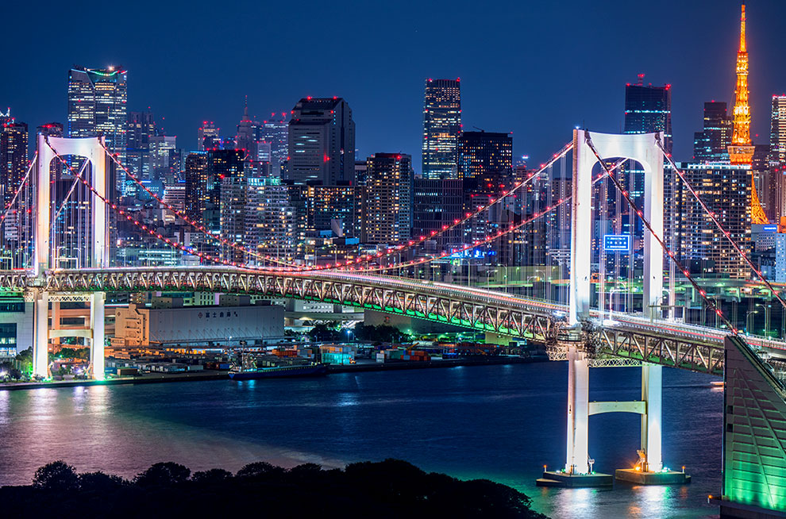
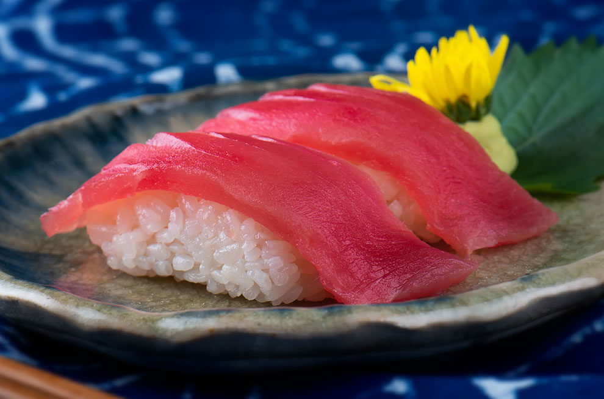

搭乘時間：2018/10/28-2019/03/30
| 航班號 | 航線 | 起飛時間 | 抵達時間 | 飛行日 |
| IT200 | 桃園－成田 | 06:35 | 10:35 | 每日 |
| IT202 | 桃園－成田 | 13:30 | 17:30 | 每日 |
| IT201 | 成田－桃園 | 11:25 | 14:50 | 每周二、四、日 |
| 13:00 | 16:25 | 每周一、三、五、六 | ||
| IT203 | 成田－桃園 | 18:25 | 21:50 | 每日 |
| IT280 | 高雄－成田 | 07:50 | 12:10 | 每周一、三、五、六 |
| IT281 | 成田－高雄 | 11:25 | 15:05 | 每周一、三、五、六 |
搭乘時間：2018/10/28-2019/03/30
| 航班號 | 航線 | 起飛時間 | 抵達時間 | 飛行日 |
| IT216 | 桃園－羽田 | 00:10 | 04:00 | 每日 |
| IT217 | 羽田－桃園 | 04:50 | 07:55 | 每日 |

成田機場到市區巴士：
▪成田至東京車站：搭乘京成巴士或THE ACCESS巴士，最短車程60分鐘，單程票價900日圓起
成田機場到市區電車：
▪成田至日暮里站：搭乘SKYLINER京成電鐵，最快36分鐘，單程票價2,470日圓起
▪成田至東京站：搭乘成田特快，最快50分鐘，單程票價3,020日圓起
羽田機場到市區巴士：
▪羽田至晴空塔：搭乘京急巴士，車程約50分鐘，單程票價920日圓起
▪羽田至東京站：搭乘利木津巴士，車程約30-45分鐘，單程票價930日圓起
羽田機場到市區電車：
▪羽田至東京站：搭乘京急電鐵，車程約20分鐘，單程票價580日圓起
▪羽田至濱松町站：搭乘東京單軌電車，最短車程14分鐘，單程票價490日圓起


淺草寺
身為東京最古老的寺廟，淺草寺可說是東京最熱門的景點之一，雷門更是遊客必打卡的地標

晴空塔
世界第二高塔，是東京必訪景點；觀景台可俯瞰整個東京市區，放眼望去超級壯觀

台場
戀人的聖地，曾有無數經典日劇前來取景，迄今仍是日本年輕人約會常選擇的地點


江戶前壽司
源於東京灣一代的江戶前壽司，藏有無數職人精神，發展至今已經是最著名的日本料理之一
深川飯
從江戶時代流傳至今的深川飯為日本鄉土料理百選之一，是江戶時代的漁夫料理，值得一試
月島文字燒
東京的靈魂美食，源於江戶時代，在江戶人心中有永恆的地位，是最富有玩心、童心的經典美食